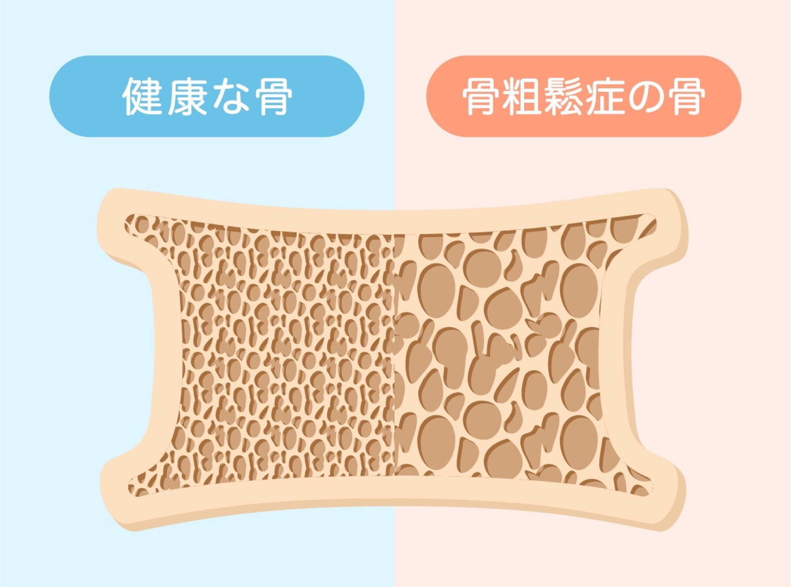
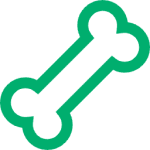
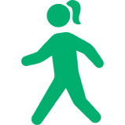

骨粗鬆症についてOSTEOPOROSIS
骨粗鬆症とは、低骨量と
骨の微細構造の劣化で
骨が脆弱化し骨折を起こしやすい
全身性の疾患です
骨粗鬆症は骨が構造上もろくなり、骨折しやすくなる病気です。ビルに例えると、壁の奥にある柱や梁（はり）が徹細構造です。それがどんどん細く、弱くなっていくと小さな地震でも家が倒れてしまいます。
弱い力で壊れてしまう＝人間ならば骨折してしまうということです。
腰の骨だけ弱い、手の骨だけ弱いというのではなく、頭の先から足の先まで全身性の骨疾患が骨粗鬆症です。転倒や骨折を予防することが、治療の最大の目的となります。

骨粗鬆症が女性の方に多い理由
女性の場合、二十歳から三十歳くらいで骨の量はピーク＝最大骨量を迎えます。男性の最大骨量は女性よりも多いのですが、骨代謝に深くかかわる女性ホルモンがないのでピークを迎えてすぐに、三十代からゆっくり骨量が落ちていきます。
ところが女性はすぐには落ちません。女性には生理があり、女性ホルモンが分泌されますから骨量が落ちません。しかし、閉経を迎え女性ホルモンが減少すると骨量も比例して落ちていきます。
このように女性ホルモンの欠乏が原因とされるのを閉経後骨粗鬆症といいます。
日本の女性約900万人、男性約75万人、合計約1000万人が骨粗鬆症患者という推定データが発表され、今後もその患者数は年々増えていくと予想されます。定期的な検査と、ご自身で行える予防で、豊かで健康な生活を送れるようにしましょう。
骨粗鬆症の予防方法
骨粗鬆症は、早期に対策することで
予防や管理が可能な病気です。
対策をせずにいると、骨折してしまったり、
寝たきりなど自立した生活を
送れなくおそれもあります。
少しずつ気づいたときに
予防方法を取り入れていきましょう。
栄養としてのカルシウム補給

人間のカルシウムの99%は歯と骨にあります。残り1%のほとんどは血液中にあり、心臓を規則正しく鼓動させたり、出血したときに血液を固まらせるなどの重要な働きをします。血液中のカルシウムが不足すると自動的に骨からカルシウムが溶け出し逆に血液のカルシウムが多くなると骨のほうに送られます。このように調節されています。骨にはカルシウムを出し入れする貯金箱のような役割もあります。これが大事です。
日光浴でビタミンDをつくる
丈夫な骨を作るのは食事と運動、日光裕のバランスです。ビタミンDは体の中でつくることができないため、食事などで外から摂取しなければなりません。日光を浴びて肌でつくられるビタミンDの量は、食物を摂取して得られる量よりも多く、極端に紫外線を避ける生活はビタミンD不足の原因となります。無理をする必要はありませんので日光に当たる時間を取り入れてみましょう。
適度な運動で丈夫な骨づくり

目安は一日八千歩。太陽の下を夫婦で歩いたり、ご友人と相手のペースに合わせて会話を楽しみながらゆっくりと歩く。単純なことですが、これだけで背骨に刺激が加わり、骨が丈夫になっていきます。杖をついていても問題ありません。すでに腰が曲がっている人も、曲がっているなりにまっすぐ立つことを心がけて歩いてください。